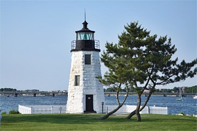

Lighthouses
Castle Hill Lighthouse
Located in Newport on Castle Hill Road. Castle Hill Lighthouse was one of the navigational aid for ships in Newport. As the ligthouse was being built, it was delayed multiple times due to the owner of the lands, Alexander Agassiz, who sold the land for a dollar. Intially, the ligthouse was to be built with a horn ;however Alexander complained about the noise. Later on a fog horn would be built and a screen to appease the Alexander. The lighthouse was built on May 1, 1896 over at Castle Hill costing around 10000 dollars. The inside of the lighthouse contained 6 rooms and a kitchen.
Newport Harbor Lighthouse
Located in Newport on Goat Island. The Newport Harbor Lighthouse was the first lighthouse to guide sailors into the Newport Harbor. Its construction was completed in 1823 and costed around 2500 dollars. Because it did a poor job at indicating the nearby shallow reef, it was decided the light of the house to be transported to a dike off the northern part of the island. The dike and New tower would properly guide the ships rather than causing them to touch the reef. However, the costs for building the dike were expensive costing around 67000 dollars. Some of the old tower was reused to build the new tower over at Prudence Island. You can still visit the original lighthouse but, you can go into it.
Southeast Lighthouse
Located on Block Island at Spring Street. The Southeast Lighthouse was built near a pond for the purpose of using it for a steam fog signal. It is on bluff cliff called Mohegan Cliffs. The total cost to build the was around 79000 dollars including the steam god signal. Unfortunately, the Southeast Lighthouse was badly damaged by a hurricane on September 21, 1938. The ligthhouse was badly damage causing its lights to be turned off for a few days for repairs.